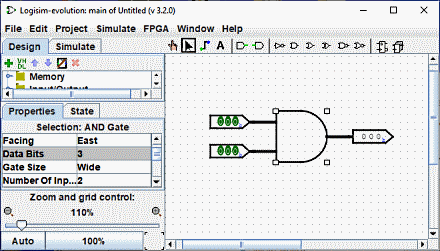
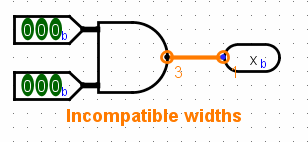
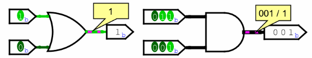

创建线束
在简单的 Logisim 电路中，大多数导线只携带一位；但 Logisim 也允许创建由多位组成的线束。沿导线传输的位数就是该导线的位宽。
电路中每个组件的每个输入和输出都有对应的位宽。通常位宽为 1 且无法更改，但 Logisim 的许多内置组件提供了用于自定义输入和输出位宽的属性。
下面的截图展示了一个用于计算两个三位输入按位与的简单电路。注意，三位输出就是两个输入的按位与。所有组件都通过数据位宽属性设置为处理三位数据；截图中显示的是与门属性，其中数据位宽为 3。

Logisim 中的所有组件都会为每个输入和输出定义位宽。相比之下，导线本身的位宽并不固定：它会适应所连接组件的位宽。如果一条导线连接了两个要求不同位宽的组件，Logisim 会报告“宽度不兼容”，并以橙色标出出错位置。下例中，输出引脚的数据位宽属性被改为 1，因此 Logisim 会报告该导线无法把三位值连接到一位值。

连接不兼容位置（以橙色绘制）的导线不传递值。
对于单比特导线，可以根据颜色直接看出它携带的值，因为 Logisim 会按值将导线绘制为浅绿色或深绿色。多位导线不会直接显示具体值，而是绘制为黑色。不过，可以使用手形工具（ ）单击导线来查看其值。
）单击导线来查看其值。

此探测功能对于调试使用线束的电路很有帮助。
下一节： 分线器。